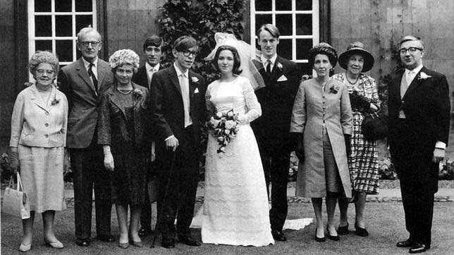

Biografía
El 8 de enero de 1942, día en que se cumplieron trescientos años de la
muerte de Galileo, nació Stephen Hawking en la ciudad de Oxford. Como
tantas otras de clase media, su familia soportaba con entereza los rigores
de la Segunda Guerra Mundial; hacia el final de la contienda, un cohete V2
alemán cayó a pocas decenas de metros de su casa en Highgate, al norte
de Londres. Tras cursar estudios secundarios, Hawking ingresó en el
University College de Oxford, donde se licenció en 1962 con los títulos de
matemático y físico. Por esa época era un chico de vida normal, cuyas
singularidades eran únicamente su brillante inteligencia y un gran interés
por las ciencias.
Pero en 1963, en el transcurso de una sesión de patinaje sobre hielo, el
joven Stephen resbaló y tuvo dificultades para incorporarse. De inmediato
se le diagnosticó un trastorno degenerativo neuromuscular, la ELA o
esclerosis lateral amiotrófica. Los médicos supusieron que la enfermedad
iba a acabar con su vida en pocos años; sin embargo, se equivocaron.
Naturalmente, la vida de Stephen no fue la misma a partir de entonces,
pero sus limitaciones físicas no interrumpieron en ningún momento su
actividad intelectual; de hecho, más bien la incrementaron.
En octubre de 1962 había iniciado sus estudios de doctorado en el Trinity
Hall de Cambridge. Solicitó trabajar con Fred Hoyle, pero el célebre
astrónomo tenía demasiados pretendientes y la petición fue denegada;
muchos años después, el propio Hawking vería el lado positivo: de haber
sido aceptado, probablemente se hubiera visto obligado a defender la
teoría del estado estacionario de Hoyle, desacreditada tras el
descubrimiento de la radiación de fondo de microondas en 1965.

Hawking con Jane Wayline el dia de la boda (1965)
Mientras cursaba su doctorado se casó con Jane Wayline (1965), con
quien tendría tres hijos. Tras casi veinticinco años de vida en común, en
1990 la pareja se separó y el científico se fue a vivir con Elaine Mason,
una de las enfermeras que lo cuidaba y con la que cinco años más tarde
contrajo matrimonio; esta segunda relación se prolongaría hasta 2007.
Después de obtener el título de doctor en física teórica (1966), su pasió
por el estudio del origen del universo fue en aumento, y sus
investigaciones se centraron en el campo de la relatividad general,
particularmente en la física de los agujeros negros, descrita por primera
vez por Robert Oppenheimer en 1939.
Ciertamente, Hawking no sólo es comparable con Albert Einstein por su
popularidad: al igual que el formulador de la teoría de la relatividad, Stephen
Hawking se planteó la ambiciosa meta de armonizar la relatividad general
y la mecánica cuántica, en busca de una unificación de la física que
permitiese dar cuenta tanto del universo como de los fenómenos
subatómicos. En 1971 sugirió la formación, a continuación del big bang,
de numerosos objetos denominados «miniagujeros negros», que
contendrían alrededor de mil millones de toneladas métricas de masa,
pero ocuparían sólo el espacio de un protón, circunstancia que originaría
enormes campos gravitatorios, regidos por las leyes de la relatividad.
Sus estudios sobre los miniagujeros negros lo llevarían a combinar por
primera vez la teoría de la relatividad y la mecánica cuántica para resolver
el problema de estudiar estas estructuras de dimensiones muy reducidas
y de densidad extraordinariamente elevada, sobre las que no se creía que
se pudiese obtener algún conocimiento. En 1974 propuso, de acuerdo con
las predicciones de la física cuántica, que los agujeros negros emiten
radiación térmica hasta agotar su energía y extinguirse. Hawking ha
explorado asimismo algunas singularidades del binomio espacio-tiempo.

Fotografia sacada de (La teoria de todo 2014). Filme vasado en la vida de Stephen Hawking
En 1974 Hawking fue designado miembro de la Royal Society y, tres años
más tarde, profesor de física gravitacional en Cambridge, donde se le
otorgó la cátedra Lucasiana de matemáticas (1980), que había sido
dictada por tan egregias figuras como Isaac Newton y, más
recientemente, Paul Dirac. Hawking continuaría ocupando dicha cátedra
hasta su jubilación en 2009. Pero a medida que los logros intelectuales y
los reconocimientos se iban sucediendo en su vida (recibió innumerables
premios y doctorados honoris causa), también avanzaba el proceso
degenerativo de su enfermedad. Primero la inmovilidad de sus
extremidades lo llevó a depender de una silla de ruedas; después la
parálisis se extendió a casi todo su cuerpo; en 1985 contrajo una
neumonía que obligó a los médicos a practicarle una traqueotomía, tras
lo cual perdió completamente el habla. A partir de entonces sólo pudo
comunicarse mediante un sintetizador conectado a su silla, pero ni
siquiera eso lo desmoralizó: escribió otros siete libros y siguió publicando
artículos e impartiendo conferencias
Un gran divulgador
Resulta una gran paradoja, sin duda, que un hombre que se involucró
plenamente en la tarea de clarificar los conceptos científicos para el
público medio (a diferencia de la mayoría de sus colegas, Hawking optó
decididamente por la divulgación) hubiera de enfrentarse duramente con
la dificultad de poder comunicarlos. No obstante, gracias a su empeño y
tenacidad, no dejó de salvar los escollos que se derivaban de sus
discapacidades físicas. En 1989, en ocasión de su visita a España para
recibir el premio Príncipe de Asturias, Stephen Hawking subrayó la
importancia de que los ciudadanos de a pie posean las nociones científicas
suficientes para participar en los debates que abren los nuevos avances
científicos y tecnológicos, evitando que todo quede en manos de los
expertos.
Ése es el mensaje que se descubre en algunos de sus libros más famosos,
como Historia del tiempo: del big bang a los agujeros negros (1988), que ha sido
traducido a treinta y siete idiomas y del que en pocos años se vendieron
más de veinte millones de ejemplares. En su propósito de hacer llegar el
libro a un público amplio, Stephen Hawking renuncia a las fórmulas y a
las exposiciones para especialistas, pero no abandona el tratamiento
riguroso de la cuestión. Procede primero a una amplia exposición de las
ideas cosmológicas actuales (el big bang y la expansión del universo), así
como de los principales hallazgos de la física de las partículas, que explican
a nivel subatómico cómo es la materia y las fuerzas que la gobiernan.
Hawking pone de manifiesto la sorprendente convergencia de estas dos
vías de investigación, que han dado nacimiento a una nueva disciplina: la
astrofísica de las partículas.
En Historia del tiempo el autor aborda también, manteniendo siempre el
tono de alta divulgación, temas como los agujeros negros y, además del
origen, el posible destino del universo. Tampoco elude la pregunta que se
formula el hombre común cuando se enfrenta a estas cuestiones: el papel
de Dios en todos esos fenómenos, así como la creación del universo, punto
en el que Stephen Hawking abandona el tratamiento rigurosamente
científico para aventurarse en los inciertos caminos de la especulación
metafísica.
Otro libros posteriores, como Agujeros negros y pequeños universos (1994), El
universo en una cáscara de nuez (2002) o El gran diseño (2010), manifiestan una
intención divulgativa todavía mayor que sus libros precedentes. Respecto
a su bibliografía más especializada, sus esfuerzos para describir desde un
punto de vista teórico las propiedades de los agujeros negros, así como la
relación que estas propiedades guardan con las leyes de la termodinámica
clásica y de la mecánica cuántica, han quedado recogidos en obras
como The Large Scale Structure of Space-Time (1973, en colaboración con G.F.R.
Ellis), Superspace and Supergravity (1981) y The Very Early Universe (1983).